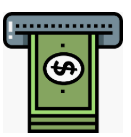
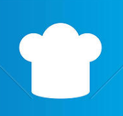
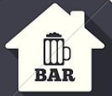

<ion-header>
  <ion-navbar color="primary">
    <button ion-button icon-only menuToggle>
      <ion-icon name="menu"></ion-icon>
    </button>
    <ion-buttons end>
      <button (click)="salir()" ion-button icon-end>
        Salir
      </button>
    </ion-buttons>

    <ion-title>
      Conexiones
    </ion-title>

  </ion-navbar>
</ion-header>

<ion-content class="fondo">
  <ion-refresher (ionRefresh)="actualizando($event)">
    <ion-refresher-content></ion-refresher-content>
  </ion-refresher>
  <ion-grid [ngClass]="{'normal':!deslizar,'cabeceramenu':deslizar}">
    <ion-row style="height: 100%;">
      <ion-col>
        <label style=" color: #ffe5e5;
          font-size: larger;
          /* font-family: -webkit-body; */
          /* font-stretch: unset; */
          font-weight: lighter;
          font: icon;
          font-weight: bold;
          position: absolute;
    bottom: 20px;">Conexión Bluetooth</label>
      </ion-col>
    </ion-row>
  </ion-grid>
  <h3 style="text-align: center;
  margin-top: -25px;
  border-top-left-radius: 60px;
  border-top-right-radius: 60px;
  background: white;
height: 30px;" ></h3>
  <ion-list>
    <ion-item>
        <ion-avatar item-start>
            
          </ion-avatar>
      <h2>Conectar impresora cajero</h2>
      <button class="botonespersonalizados" (click)="dispositivos('cajero');" color="blue" ion-button item-end>
        <ion-icon  name="arrow-forward"></ion-icon>
      </button>
    </ion-item>
    <ion-item>
      <ion-avatar item-start>
          
        </ion-avatar>
    <h2>Conectar impresora cocina</h2>
    <button class="botonespersonalizados" (click)="dispositivos('cocina');" color="blue" ion-button item-end>
      <ion-icon  name="arrow-forward"></ion-icon>
    </button>
  </ion-item>
  <ion-item>
    <ion-avatar item-start>
        
      </ion-avatar>
  <h2>Conectar impresora barra</h2>
  <button class="botonespersonalizados" (click)="dispositivos('barra');" color="blue" ion-button item-end>
    <ion-icon  name="arrow-forward"></ion-icon>
  </button>
</ion-item>
    <ion-item>
      <ion-avatar item-start>
          
        </ion-avatar>
    <h2>Imprimir prueba</h2>
    <button class="botonespersonalizados" (click)="imprimir();" color="blue" ion-button item-end>
      <ion-icon  name="arrow-forward"></ion-icon>
    </button>
  </ion-item>
  </ion-list>
</ion-content>
